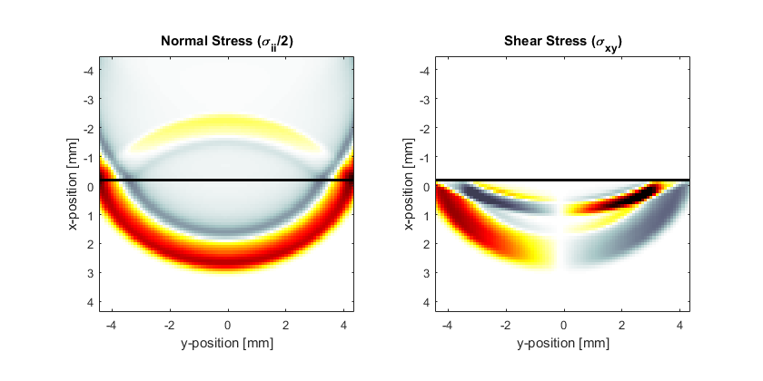
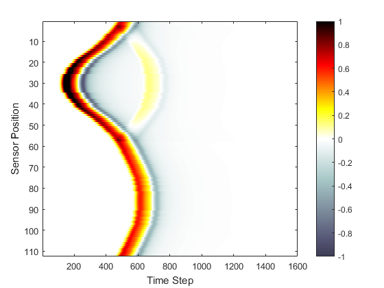

Explosive Source In A Layered Medium Example
This example provides a simple demonstration of using k-Wave for the simulation and detection of compressional and shear waves in elastic and viscoelastic media within a two-dimensional heterogeneous medium. It builds on the Homogenous Propagation Medium and Heterogeneous Propagation Medium examples.
Contents
Defining the medium and source properties
In addition to the simulation functions for modelling compressional waves in fluid media (kspaceFirstOrder1D, kspaceFirstOrder2D, kspaceFirstOrderAS, and kspaceFirstOrder3D), k-Wave also includes functions for simulating the propagation of compressional and shear waves in isotropic elastic and viscoelastic media. These functions are based on the pseudospectral time domain (PSTD) method, and are called pstdElastic2D, pstdElastic3D. These are used in a very similar fashion to the fluid codes, and require four input structures which define the properties of the computational grid, the material properties of the medium, the properties and locations of any acoustic sources, and the properties and locations of the sensor points used to record the evolution of the wavefield over time. The kgrid and sensor inputs are defined in an identical fashion to the fluid code, while the medium and source input structures have slightly different field names to reflect the nature of solid materials.
In an isotropic elastic medium, the material properties can be characterised by the shear and compressional sound speeds, and the mass density. These are assigned to the medium structure as the fields sound_speed_compression, sound_speed_shear, and density. In a homogeneous medium, the material parameters are set as scalar values in SI units. In a heterogeneous medium, these are instead given as matrices with the same dimensions as the computational grid. In this example, a heterogeneous medium is created with two material layers.
% define the properties of the upper layer of the propagation medium medium.sound_speed_compression = 1500 * ones(Nx, Ny); % [m/s] medium.sound_speed_shear = zeros(Nx, Ny); % [m/s] medium.density = 1000 * ones(Nx, Ny); % [kg/m^3] % define the properties of the lower layer of the propagation medium medium.sound_speed_compression(Nx/2:end, :) = 2000; % [m/s] medium.sound_speed_shear(Nx/2:end, :) = 800; % [m/s] medium.density(Nx/2:end, :) = 1200; % [kg/m^3]
For viscoelastic media, the absorption coefficient in units of dB/(MHz^2 cm) can also be defined for both compressional and shear waves. The elastic codes are based on the classical Kelvin-Voigt absorption model, which gives absorption proportional to frequency squared in the low frequency limit.
% define the absorption properties medium.alpha_coeff_compression = 0.1; % [dB/(MHz^2 cm)] medium.alpha_coeff_shear = 0.5; % [dB/(MHz^2 cm)]
The elastic codes support three types of sources: (1) an initial pressure distribution, (2) time varying velocity sources, and (3) time varying stress sources. These are used in an analogous fashion to the fluid codes. In this example, an explosive source is assigned to source.p0. Within the simulation function, this is then assigned to the normal components of the stress.
% create initial pressure distribution using makeDisc disc_magnitude = 5; % [Pa] disc_x_pos = 30; % [grid points] disc_y_pos = 64; % [grid points] disc_radius = 5; % [grid points] source.p0 = disc_magnitude * makeDisc(Nx, Ny, disc_x_pos, disc_y_pos, disc_radius);
Running the simulation
The elastic codes are based on the pseudospectral time domain method. This does not use a k-space corrected scheme for time integration like the fluid codes, which means smaller time steps are typically required for stable and accurate simulations. In this example, the Courant-Friedrichs-Lewy (CFL) number is set to 0.1.
% create the time array cfl = 0.1; % Courant-Friedrichs-Lewy number t_end = 8e-6; % [s] kgrid.makeTime(max(medium.sound_speed_compression(:)), cfl, t_end);
The simulation is then started by calling pstdElastic2D with the four input structures analogous to kspaceFirstOrder2D. Optional inputs can similarly be defined as 'string', value pairs after the main inputs. By default, as the simulation runs, a visualisation of the propagating wave field and a status bar are displayed with frame updates every ten time steps. Both the normal and shear components of the stress are displayed. The plot scales for these can be defined individually using the 'PlotScale' input. This is defined as [sii_min, sii_max, sij_min, sij_max], where sii and sij denote the plot scales for the normal and shear stress.
% define input arguments input_args = {'PlotScale', [-0.75, 0.75, -0.15, 0.15], 'PlotPML', false,... 'DisplayMask', display_mask, 'DataCast', 'single'}; % run the simulation sensor_data = pstdElastic2D(kgrid, medium, source, sensor, input_args{:});
A visualisation of the running simulation and the recorded sensor data are given below. Both compressional and shear waves in the lower layer of the medium are clearly visible.
 